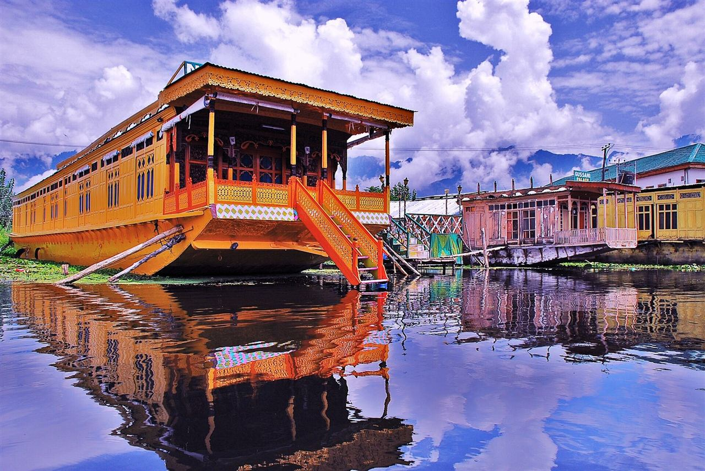
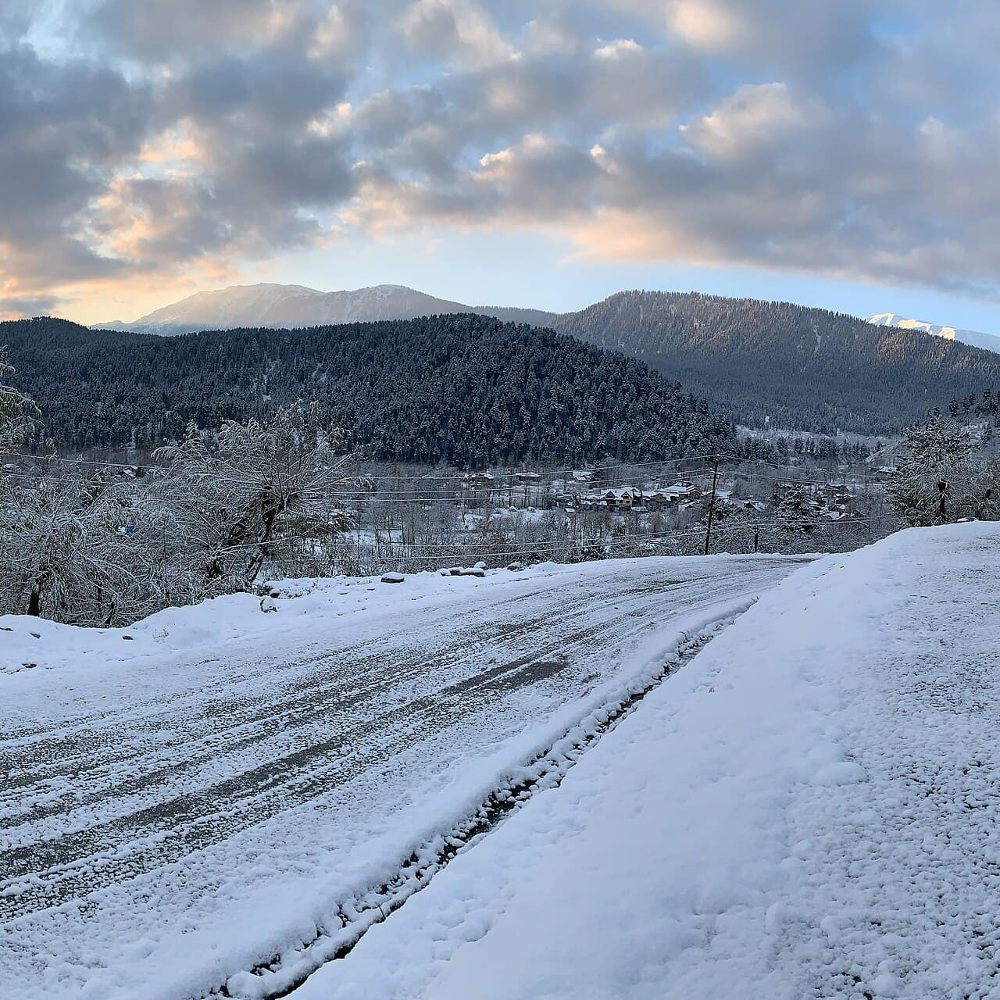

Hotel or guesthouse · selected with your quote
Standard room · shared occupancy
Hotel and room details confirmed in your quote.
 Kashmir · destination inspiration
Kashmir · destination inspirationVillage stays, riverside pauses, and a week with room to wander.
Village stays, riverside pauses, and a week with room to wander. We’ll tailor the route and services to your dates.
Srinagar · Gurez · Sind Valley · Naranag
Proposed small group · size to be confirmed · Seasonal access · dates on request. Availability confirmed on enquiry.
Day rhythm Local exploration with rest time
Meet your arranged transfer and settle into your stay. Keep the day flexible around arrival and rest.
Day rhythm Travel day with selected stops
Drive via Bandipora towards Gurez if the pass is open and permissions are in place. Pause along the way and settle into a village stay.
Day rhythm Local exploration with rest time
Spend the day around Dawar with time for the river, village lanes, and local conversations. Visits are by consent and the day is kept unhurried.
Day rhythm Travel day with selected stops
Explore the Tulail side by road with short optional walks. Your final route depends on permissions, weather, and the group’s needs.
Day rhythm Travel day with selected stops
Return over the pass and continue towards a riverside stay in the Sind Valley. This is a travel day; stops depend on road conditions.
Day rhythm Local exploration with rest time
Choose a locally guided walk around Naranag, subject to suitability, or an easier alternative. Return to Srinagar for the night.
Day rhythm Departure and transfer
Departure timing takes priority. Extra stops are only considered after allowing a transfer buffer.
Check out and take the arranged transfer for your onward journey. Departure timings and road buffers will be confirmed in your proposal.
Package outline need supplier confirmation. Only your accepted written quote determines the actual package.
Check optional costs before booking: activity tickets, local vehicles, permits, taxes and room supplements are included only when listed in your quote.
Guide price; your tailored quote confirms the final cost and inclusions.
per person · shared-occupancy land package estimate
These proposed dates are planning suggestions; departures and seats still require confirmation.
Request availability for your dates ↗ⓘ Guide prices for planning, subject to availability and supplier confirmation. Your written quote confirms the total, taxes, sharing basis, and exact inclusions.
Suggested dates · request availability.

Suggested overnight stops. Your quote confirms the named stays and room details.
Standard room · shared occupancy
Hotel and room details confirmed in your quote.
Standard room · shared occupancy
Hotel and room details confirmed in your quote.
Standard room · shared occupancy
Hotel and room details confirmed in your quote.
Standard room · shared occupancy
Hotel and room details confirmed in your quote.
Hotel options to discuss. Your quote confirms the selected property.
Kashmir route base · Research starting point only. The final quote must name the actual property; no allocation or price is confirmed.
Before paying, receive named hotels, room categories, meal plan, dates, vehicle/support details, total price, inclusions, exclusions and cancellation conditions in writing.
Optional route ideas, quoted separately. Extra nights are additional to this 7-day proposal.
Request two nights for a slower Pahalgam stay, choosing Aru or Betaab on separate outings rather than rushing both. This may change the main route; local transport, entry charges, hotel and extra cost are quoted separately.
Ask about this extension ↗Discuss a separate Kokernag or Daksum-area night so the southern valley has its own time. The overnight base, road access, heating and return route need confirmation rather than being added to a busy transfer day.
Ask about this extension ↗Request a date-specific checklist. Seek individual professional advice where altitude or exertion is involved.
Destination gallery. Photo credits.
Selected summaries of public reviews. Read each customer’s own words on Google.
Praised the well-organised trip, reasonable pricing, and personal touch.
Read the original review ↗Highlighted courteous service, punctual pickup and drop-off, and reasonable pricing.
Read the original review ↗Praised the service, timing, and rates.
Read the original review ↗Confirm current roads, permissions, and suitable alternatives before departure.
Ask for your trip coordinator, guide arrangements, and emergency contacts in writing.
Discuss altitude, activity levels, rest time, and your group’s needs before committing.
Guide prices help you plan. Your quote confirms availability, the total and exactly what is included.
Each trip has a proposed inclusion list and an exclusion list. Most overnight proposals cover stays, breakfast and dinner, and agreed route transport. Flights, insurance, lunches, and optional activities are generally separate. Only your accepted quote determines the actual package.
Group dates are available on enquiry. Tell us when you want to travel and we’ll check the group arrangements or a private alternative before you book.
Your quotation sets out the payment schedule, cancellation deadlines and supplier charges for your selected services. Read the booking and cancellation pages, and agree the trip-specific conditions before payment.
 Group journeyModerate
Group journeyModerateFollow the river into a quieter side of Kashmir, with longer village stays.
 Group journeyModerate
Group journeyModerateCrisp mornings, warm kahwa, and a flexible winter circuit.

Women-only journeyWinter sightseeing · walking and road conditions varyA six-day women-only winter itinerary with two Gulmarg nights, Pahalgam time and a Srinagar finish.